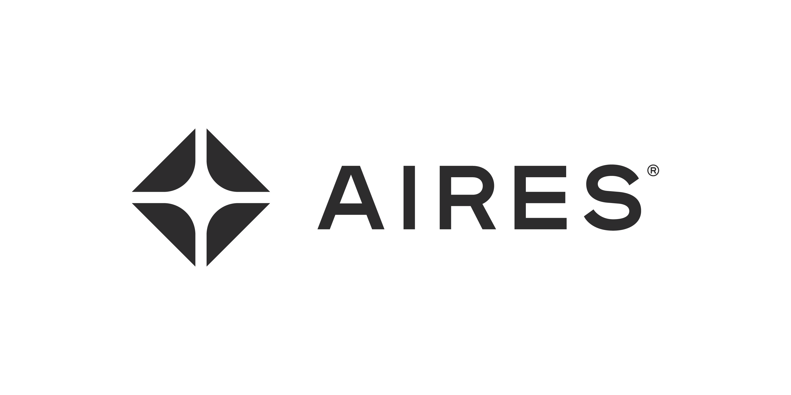
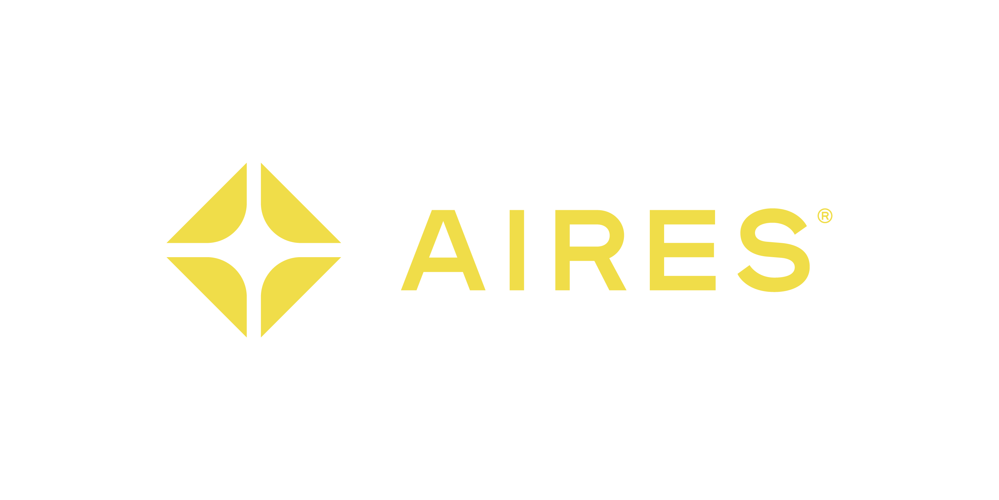

Sessions needing attention
READY FOR REVIEWWestward product reviewZoom · 3 sources
NEEDS DECISIONReporting exportNotion · GitHub
FOLLOW-UP DUEOnboarding milestone 03Account memory
COOPERThree sessions need human judgment.

/ Company OSProduct demo
An illustrative walkthrough of one source-grounded session.
Westward · Customer accountGoals, open requests, decisions
NOTIONReporting export · discoveryRequirements draft · updated today
NOTIONaires / customer-reportingRepository · Peterson branch
GITHUBPR #842 · export foundation12 files · checks passing
GITHUBCustomer evidenceMonthly exports are assembled manually.
Existing contextCSV is the likely first slice.
Delivery contextPR #842 is foundation, not commitment.
Requirements briefSCOPE · SLICES · ACCEPTANCE
Decision memoSOURCE-GROUNDED
Bug briefSOURCE-GROUNDED
Customer follow-upSOURCE-GROUNDED
PROBLEMOperations teams manually assemble monthly reports.↳ Notion · account memory
DESIRED OUTCOMEExport a customer-ready report without manual assembly.↳ Notion · discovery
FIRST VERTICAL SLICEGenerate a CSV for one account and reporting period.↳ Session · confirmed
OUT OF SCOPE NOWScheduling, custom templates, and PDF formatting.↳ Session · proposed
The live interaction ends. Sources, artifacts, and the audit trail remain available.
Confirmed in the session after reviewing customer evidence.
Scope was shaped, but capacity was not committed.
01 · Product reviews the brief
02 · Engineering validates constraints
03 · Customer success prepares follow-up
Who owns schema versioning?
What volume matters first?

Governed closeout
Approved decisions, documents, delivery context, and follow-up return to durable memory.